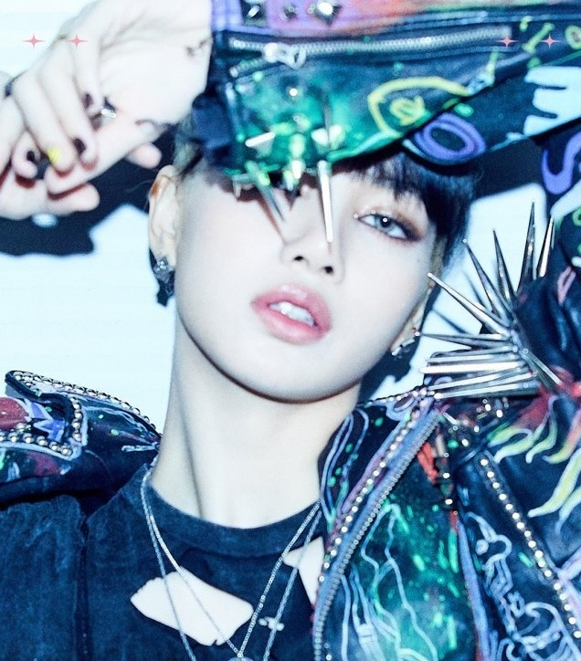

作爲K-POP第三代代表偶像組合之一,是在海外和Billboard主排行榜上創下很多紀錄的世界級女子組合。
現在女團中唯一一位成員都是國際品牌的"全球大使"。
本名: 金珍妮, Kim Jennie (김제니)
出生: 1996年1月16日[延期入學](26歲)
國籍: 韓國
-
本名: 金智秀 (김지수)
出生: [快的生日]1995年1月(27歲)3日
國籍:
韓國
本名:
朴彩英, Roseanne Park (박채영)
出生: 1997年2月11日[生日快] (25歲)
國籍: 韓國 / 新西蘭 (多重國籍)
本名: ลลิษา มโนบาล, Lalisa Manobal
出生: 1997年3月27日[生日快] (25歲)
國籍: 泰國

YG | Kpop World